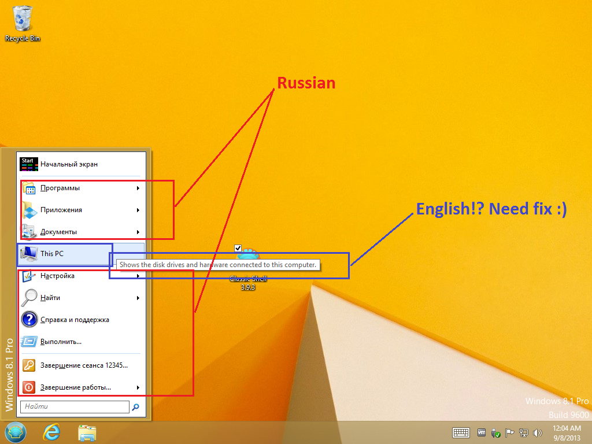
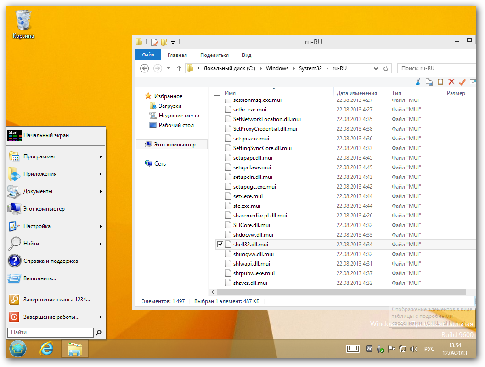
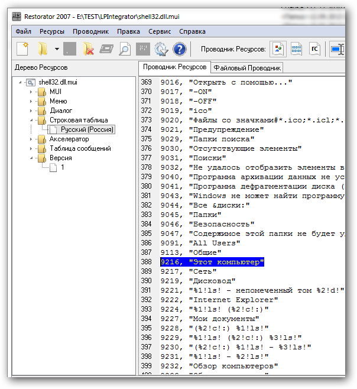

Seryi wrote:
Логинвовчик, а как будет на fabc6a470f07e74a7b436874019a9545 ИСО?
Не понял твой вопрос? Что за текст
| Classic Shell http://www.classicshell.net/forum/ |
|
| Translation issue http://www.classicshell.net/forum/viewtopic.php?f=19&t=1229 |
Page 1 of 1 |
| Author: | loginvovchyk [ Sun Sep 08, 2013 12:10 am ] |
| Post subject: | Re: Windows 8.1 RTM |
Для всех языков нужно обновить строки перевода с учетом локализации Windows 8.1 в файлах StartMenuL10N.ini и ExplorerL10N.ini  |
|
| Author: | Ivo [ Sun Sep 08, 2013 8:09 am ] |
| Post subject: | Re: Windows 8.1 RTM |
That's the name you get from the OS. Once you get a Russian version of Windows 8.1 I hope it will be translated. |
|
| Author: | Gaurav [ Sun Sep 08, 2013 8:14 am ] |
| Post subject: | Re: Windows 8.1 RTM |
I noticed during testing that even with the Russian language pack and Russian DLL for CSM, the "Computer" item was not getting translated. All others were. I will have to test it again. |
|
| Author: | Ivo [ Sun Sep 08, 2013 8:21 am ] |
| Post subject: | Re: Windows 8.1 RTM |
What does it say in Explorer? |
|
| Author: | Seryi [ Sun Sep 08, 2013 8:36 am ] |
| Post subject: | Re: Windows 8.1 RTM |
Логинвовчик, а как будет на fabc6a470f07e74a7b436874019a9545 ИСО? |
|
| Author: | Gaurav [ Sun Sep 08, 2013 9:06 am ] |
| Post subject: | Re: Windows 8.1 RTM |
IIRC even Explorer said "Computer" that's why I didn't report it as a bug. I will try it again soon. Windows 8.1's language packs don't yet seem to have been made available online and my W7 partition is running out of disk space to try the language pack. I did find the MUI string in Shell32.dll.mui (Resource 577, 9216, "This PC"/"Computer" and its tooltip: 1433, 22913, "Shows the disk drives and hardware connected to this computer." |
|
| Author: | loginvovchyk [ Sun Sep 08, 2013 12:23 pm ] |
| Post subject: | Re: Windows 8.1 RTM |
Ivo wrote: What does it say in Explorer? В Проводнике, хотелось бы чтобы по умолчанию значки панели инструментов Classic Shell были маленькими, а не большими. |
|
| Author: | loginvovchyk [ Sun Sep 08, 2013 12:29 pm ] |
| Post subject: | Re: Windows 8.1 RTM |
Seryi wrote: Логинвовчик, а как будет на fabc6a470f07e74a7b436874019a9545 ИСО? Не понял твой вопрос? Что за текст |
|
| Author: | Ivo [ Sun Sep 08, 2013 12:30 pm ] |
| Post subject: | Re: Windows 8.1 RTM |
loginvovchyk wrote: Ivo wrote: What does it say in Explorer? В Проводнике, хотелось бы чтобы по умолчанию значки панели инструментов Classic Shell были маленькими, а не большими. I don't know what you mean by that. But I know it doesn't answer my question if "This PC" is translated when you look at it in Explorer |
|
| Author: | Gaurav [ Sun Sep 08, 2013 1:42 pm ] |
| Post subject: | Re: Translation issue |
Okay I managed to try a language pack and this is what I observed. In Windows 7 style, Favorites, Games and This PC are not translated in the Start Menu. Explorer also shows English names, so they're not translated by Windows itself. In Classic style, Favorites is translated because it's obviously defined in StartMenuL10N.ini. |
|
| Author: | loginvovchyk [ Sun Sep 08, 2013 11:41 pm ] |
| Post subject: | Re: Translation issue |
This PC - Этот компьютер |
|
| Author: | loginvovchyk [ Sun Sep 08, 2013 11:42 pm ] |
| Post subject: | Re: Windows 8.1 RTM |
Ivo wrote: loginvovchyk wrote: Ivo wrote: What does it say in Explorer? В Проводнике, хотелось бы чтобы по умолчанию значки панели инструментов Classic Shell были маленькими, а не большими. I don't know what you mean by that. But I know it doesn't answer my question if "This PC" is translated when you look at it in Explorer In Explorer, I would like to default toolbar icons Classic Shell were small not big. |
|
| Author: | Ivo [ Mon Sep 09, 2013 12:06 am ] |
| Post subject: | Re: Translation issue |
Why do you want the default to be changed? Why not uncheck the checkbox instead? |
|
| Author: | Ivo [ Mon Sep 09, 2013 12:37 pm ] |
| Post subject: | Re: Translation issue |
loginvovchyk wrote: This PC - Этот компьютер Just to confirm - you are saying that on the same machine the start menu shows "This PC" but Explorer shows "Этот компьютер"? That's weird because the "This PC" name comes from the system. Nowhere inside Classic Shell there is such string. Are you using the Preview or RTM version of Windows 8.1? |
|
| Author: | loginvovchyk [ Thu Sep 12, 2013 1:57 pm ] |
| Post subject: | Re: Translation issue |
Im using the Preview or RTM version of Windows 8.1 see official russian localization RTM version of Windows 8.1   |
|
| Author: | Gaurav [ Thu Sep 12, 2013 9:49 pm ] |
| Post subject: | Re: Translation issue |
So as I understand loginvovchyk is using a fully localized version of Windows. But with English language edition and a Language Pack applied+translation DLL, some items like This PC, Favorites and Games don't get translated. |
|
| Page 1 of 1 | All times are UTC - 8 hours [ DST ] |
| Powered by phpBB® Forum Software © phpBB Group https://www.phpbb.com/ |
|